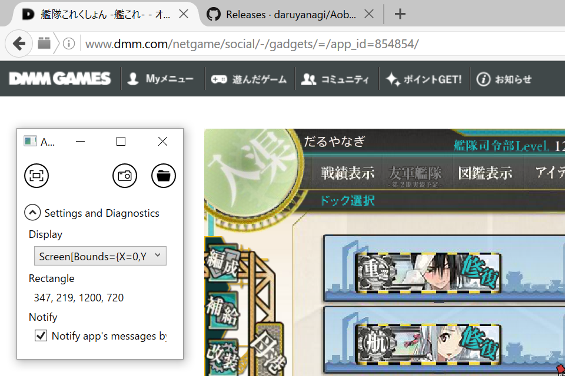
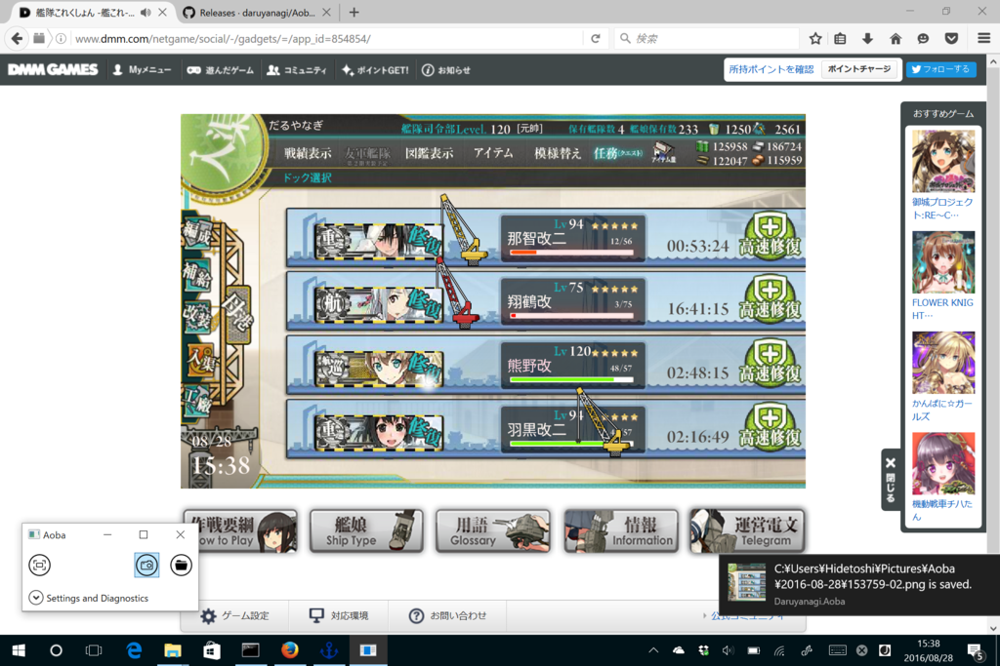
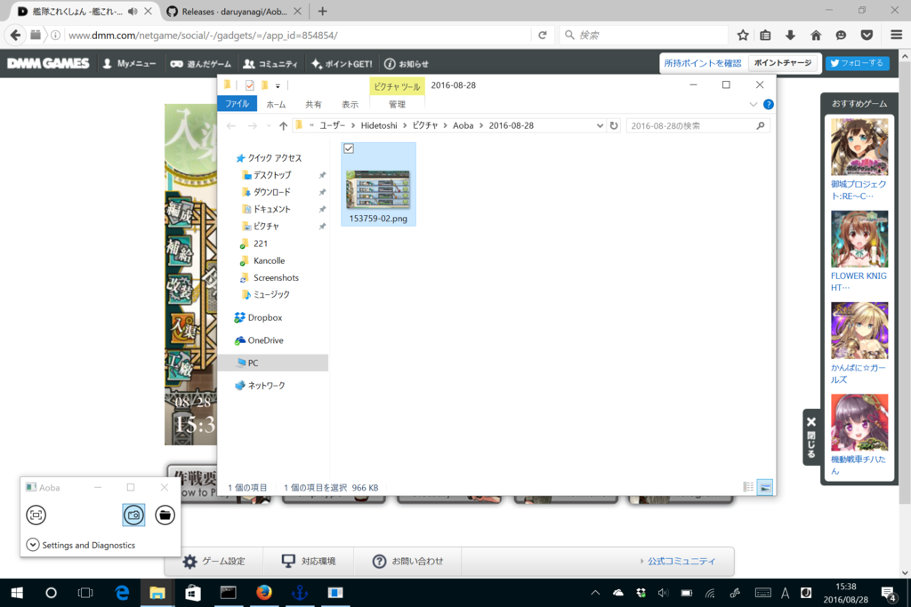

艦これのスクリーンショットを撮れるツールを自作した
公開日：

お休み中にオンラインストレージの掃除やツールのアップデートをやっていたのだけど、愛用していた艦これのキャプチャーツールが動かなくなったので、WPF で自作した。
一応自分ところでは動いているのだけど（Windows 10 version 1607＋Visual Studio 2015 Update 3で動作確認）、参照の不足なんかで動かないことがあるかもしれない。
使い方は
- 一番左の検知ボタンを押してゲーム画面の範囲を検出する
- 検出に成功すると、キャプチャーボタンが有効化される
- キャプチャーボタンを押す
だけ。キャプチャーが成功すると、トーストが出る（なので、Windows 8 以降じゃないと動かないと思う）。

トーストをクリックすると、キャプチャーした画像にアクセスできる。

一応、頑張った点としては
- マルチモニター対応（自分が Surface 3 or サブディスプレイで遊んでるので
- スケーリングとか拡大表示にも対応してるかも（大きさは決め打ちにしていない
- ゲーム画面の左上ピクセルかなーって感じのピクセルを探して、そこからある程度デカい矩形を検出
- そんな感じで割と適当なのと、ちょっと処理が遅いかなって感じなので、気が向いたら改善するかも
みたいな感じ。
簡易なロジック自体は割と簡単にできたけど、UI を整えたりなんだかんだで（WPF でトーストのだしかたわかんねぇ……ぐちゃぐちゃ参照を追加したけど、ここでちょっと間違ってる気がする）、半日ぐらいかかった（
追伸
Visual Studio の GitHub 拡張を使ってみたけど、やっぱり自分には GitHub アプリの方が使いやすいかな……。
追記
タブレットモードでも最前面表示されるように改修。
- WindowStyle を ToolWindow にする
- ShowTaskbar を false にする
でいけるっぽい。